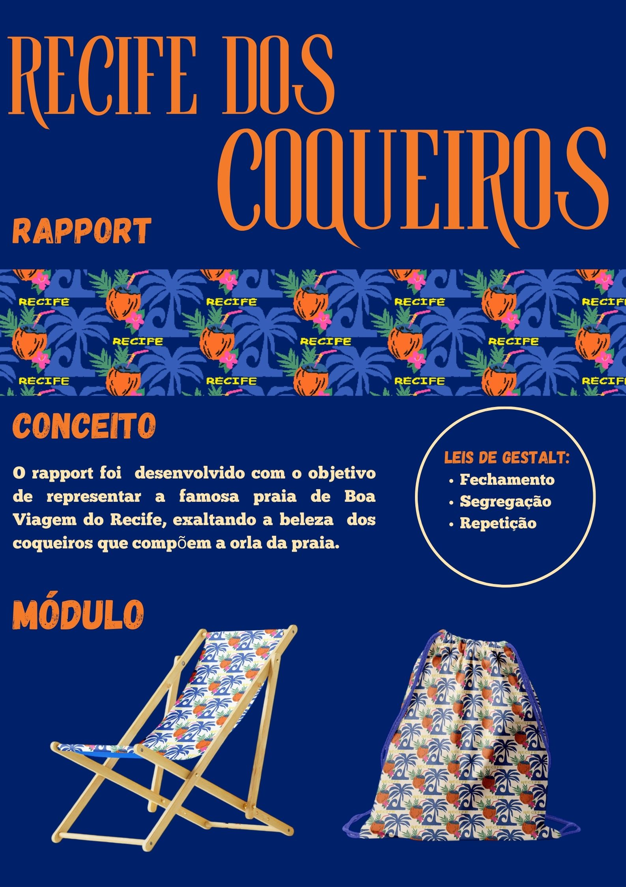

PROJETOS
Apresento no meu portfólio uma seleção de projetos desenvolvidos em diferentes áreas desde de projetos pessoais, experimentais à projetos desenvolvidos em maratonas de inovação e nas cadeiras da faculdade. Sempre cresço profissionalmente ao superar cada desafios dos projetos. Confira abaixo alguns dos meus trabalhos.
NOVIDA

Aplicativo desenvolvido com objetivo de aumentar a inclusão de refugiados no Brasil.
O foco do projeto é ser um facilitador para promover aos refugiados uma qualidade de vida melhor e uma maior inclusão social.
AUTO RETRATO

Auto Retrato desenvolvido na graduação de Design na cadeira de Representação Visual
com o objetivo de aprender as funcionabilidades do Adobe Ilustrador e desenvolver o senso criativo e estético.
MEMÓRIA SINALIZADA

Ferramenta educacional destinada ao público infantil com deficiência auditiva, concebida para facilitar a aprendizagem dinâmica e inclusiva no processo de alfabetização por meio da Lingua Brasileira de Sinais(Libras) pelos professores nas salas de aula.
RAPPORT
A estampa "Recife dos Coqueiros" foi desenvolvida com o objetivo de representar um pouco da cidade do Recife, escolhendo a Praia de Boa Viagem como inspiração, foi exaltado a beleza do coqueiros que compõem sua orla. A representação da estampa em mockups tem o intuito demonstrar como seria o produto final para vendas.